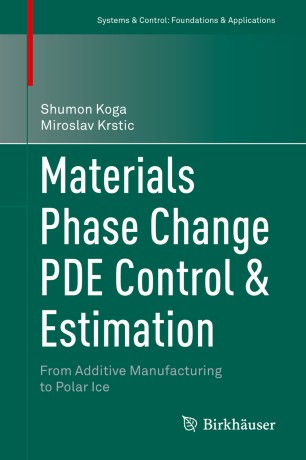

Publications
Book
S. Koga, and M. Krstic
"Materials Phase Change PDE Control and Estimation: From Additive Manufactuing to Polar Ice" [amazon]
Birkhäuser, 2020

Journal Papers
C. Demir, S. Koga, and M. Krstic
"Neuron Growth Control and Estimation by PDE Backstepping"
Automatica, vol. 165, p. 111669, 2024.
Y. Yi, S. Koga, B. Gavrea, and N. Atanasov
"Control Synthesis for Stability and Safety by Differential Complementarity Problem"
IEEE Control Systems Letters, vol. 7, pp. 895-900, 2022. [arXiv]
S. Koga and M. Krstic
"Safe PDE Backstepping QP Control with High Relative Degree CBFs: Stefan Model with Actuator Dynamics"
IEEE Transactions on Automatic Control, vol. 68, no. 12, pp. 7195-7208, 2023. [arXiv]
S. Koga and M. Krstic
"State Estimation of the Stefan PDE: A Tutorial on Design and Applications to Polar Ice and Batteries"
Annual Reviews in Control, vol. 53, pp. 199-223, 2022. [arXiv]
S. Koga and M. Krstic
"Control of Stefan system and applications: A tutorial review"
Annual Reviews in Control, Robotics, and Autonomous Systems, vol. 5, 2022.
S. Koga, M. Benosman, and J. Borggaard
"Extremum Seeking-Based Robust Observer Design for Coupled Thermal and Fluid Systems"
International Journal of Adaptive Control and Signal Processing, vol. 35, no. 7, pp. 1316-1335, 2021.
S. Koga, I. Karafyllis, and M. Krstic
Automatica, vol. 127, p. 109538, 2021.
S. Koga, L. Camacho-Solorio, and M. Krstic
"State Estimation for Lithium-ion Batteries with Phase Transition Materials via Boundary Observers"
ASME Journal of Dynamic Systems, Measurement, and Control, vol. 143, no. 4, p. 041004, 2021.
H. Yu, S. Koga, T.R. Oliveira, and M. Krstic
"Extremum Seeking Control for Traffic Congestion Control with a Downstream Bottleneck"
ASME Journal of Dynamic Systems, Measurement, and Control, vol. 143, no. 3, p. 031007, 2021. [arXiv]
S. Koga, M. Makihata, R. Chen, M. Krstic, and A.P. Pisano
"Energy Storage in Paraffin: A PDE Backstepping Experiment"
IEEE Transactions on Control Systems Technology, vol. 29, no. 4, pp. 1490-1502, 2021.
T. R. Oliveira, J. Feiling, S. Koga, and M. Krstic
"Multivariable Extremum Seeking for PDE Dynamic Systems"
IEEE Transactions on Automatic Control, vol. 65, no. 11, pp. 4949-4956, 2020.
S. Koga, M. Krstic, and J. Beaman
"Laser Sintering Control for Metal Additive Manufacturing by PDE Backstepping"
IEEE Transactions on Control Systems Technology, vol. 28, no. 5, pp. 1928-1939, 2020.
J. Feiling, S. Koga, M. Krstic, and T. R. Oliveira
International Journal of Adaptive Control and Signal Processing, vol. 35, no. 7, pp. 1162-1187, 2020.
S. Koga, D. Bresch-Pietri, and M. Krstic
"Delay Compensated Control of the Stefan Problem and Robustness to Delay Mismatch"
International Journal of Robust and Nonlinear Control, vol. 30, no. 6, pp. 2304-2334, 2020. [arXiv]
S. Koga, D. Straub, M. Diagne, and M. Krstic
ASME Journal of Dynamic Systems, Measurement, and Control, vol. 142, no. 3, p. 031005, 2020. [arXiv]
S. Koga, and M. Krstic
"Arctic Sea Ice State Estimation from Thermodynamic PDE Model"
Automatica, vol. 112, p. 108713, 2020. [arXiv]
S. Koga, and M. Krstic
"Single Boundary Control of the Two-Phase Stefan System"
Systems and Control Letters, vol. 135, p. 104573, 2020. [arXiv]
S. Koga, M. Diagne, and M. Krstic
"Control and State Estimation of the One-Phase Stefan Problem via Backstepping Design"
IEEE Transactions on Automatic Control, vol. 64, no. 2, pp. 510-525, 2019. [arXiv]
J. Wang, S. Koga, Y. Pi, and M. Krstic
"Axial Vibration Suppression in a PDE Model of Ascending Mining Cable Elevator"
ASME Journal of Dynamic Systems, Measurement, and Control, vol. 140, no. 11, p. 111003, 2018.
J. Feiling, S. Koga, M. Krstic, and T. R. Oliveira
"Gradient Extremum Seeking for Static Maps with Actuation Dynamics Governed by Diffusion PDEs"
Automatica, vol. 95, pp. 197-206, 2018.
Conference Proceedings
S. Liu, N. Atanasov, and S. Koga
"MATT-Diff: Multimodal Active Target Tracking by Diffusion Policy"
Learning for Dynamics and Control (L4DC), 2026. (accepted) [arXiv], [Code]
S. Koga, and M. Krstic
"Safe Trajectory Tracking of the Stefan Problem with Second-Order Moving Boundary Dynamics"
American Control Conference (ACC), 2026. (accepted)
S. Koga, and M. Krstic
"Safe Stabilization of the Stefan Problem with a High-Order Moving Boundary Dynamics by PDE Backstepping"
64th IEEE Conference on Decision and Control (CDC), pp. 2997-3002, 2025. [arXiv], [Code]
M. Zhou, M. Shaikh, V. Chaubey, P. Haggerty, S. Koga, D. Panagou, and N. Atanasov
"Control Strategies for Pursuit-Evasion Under Occlusion Using Visibility and Safety Barrier Functions"
IEEE International Conference on Robotics and Automation (ICRA), pp. 12863-12869, 2025. [arXiv] [Webpage] [Code]
Y. Nishizawa, S. Koga, K. Aizawa, and Y. Yasui
IEEE International Conference on Robotics and Automation (ICRA), pp. 3947-3953, 2025.
C. Demir, S. Koga, and M. Krstic
"Event-Triggered Control of Neuron Growth with Actuation at Soma"
American Control Conference (ACC), pp. 5301-5306, 2024. [arXiv]
S. Koga,
American Control Conference (ACC), pp. 3966-3971, 2024.
P. Yang, S. Koga, A. Asgharivaskasi, and N. Atanasov
"Policy Learning for Active Target Tracking over Continuous SE(3) Trajectories"
Learning for Dynamics and Control (L4DC), pp. 64-75, 2023. [Code]
P. Yang, Y. Liu, S. Koga, A. Asgharivaskasi, and N. Atanasov
"Learning Continuous Control Policies for Information-Theoretic Active Perception"
IEEE International Conference on Robotics and Automation (ICRA), pp. 2098-2104, 2023. [arXiv]
S. Koga, C. Demir, and M. Krstic
"Event-Triggered Safe Stabilizing Boundary Control for the Stefan PDE System with Actuator Dynamics"
American Control Conference (ACC), pp. 1794-1799, 2023. [arXiv]
Y. Yi, S. Koga, B. Gavrea, and N. Atanasov
"Control Synthesis for Stability and Safety by Differential Complementarity Problem"
American Control Conference (ACC), 2023
A. Asgharivaskasi, S. Koga, and N. Atanasov
IEEE/RSJ International Conference on Intelligent Robots and Systems (IROS), pp. 12994-13001, 2022. [arXiv]
S. Koga, A. Asgharivaskasi, and N. Atanasov
"Active SLAM over Continuous Trajectory and Control: A Covariance-Feedback Approach"
American Control Conference (ACC), pp. 5062-5068, 2022. [arXiv]
C. Demir, S. Koga, and M. Krstic
"Neuron Growth Output Feedback Control by PDE Backstepping"
American Control Conference (ACC), pp. 4159-4164, 2022. [arXiv]
S. Koga, and M. Krstic
"Safe PDE Backstepping QP Control with High Relative Degree CBFs: Stefan Model with Actuator Dynamics"
American Control Conference (ACC), pp. 2033-2038, 2022.
S. Koga, A. Asgharivaskasi, and N. Atanasov
IEEE/RSJ International Conference on Intelligent Robots and Systems (IROS), pp. 2735-2741, 2021. [arXiv] [Webpage]
C. Demir, S. Koga, and M. Krstic
"Neuron Growth Control by PDE Backstepping: Axon Length Regulation by Tubulin Flux Actuation in Soma"
60th IEEE Conference on Decision and Control (CDC), pp. 649-654, 2021. [arXiv]
S. Koga, M. Krstic, and J. Beaman
"Laser Sintering Control for Metal Additive Manufacturing by PDE Backstepping"
58th IEEE Conference on Decision and Control (CDC), pp. 1195-1200, 2019.
S. Koga, M. Benosman, and J. Borggaard
"Learning-Based Robust Observer Design for Coupled Thermal and Fluid Systems"
American Control Conference (ACC), pp. 941-946, 2019. [pdf]
S. Koga, and M. Krstic
"Control of Two-Phase Stefan Problem via Single Boundary Heat Input"
57th IEEE Conference on Decision and Control (CDC), pp. 2914-2919, 2018. [Slides]
M. Buisson-Fenet, S. Koga, and M. Krstic
"Control of Piston Position in Inviscid Gas by Bilateral Boundary Actuation"
57th IEEE Conference on Decision and Control (CDC), pp. 5622-5627, 2018.
T. R. Oliveira, J. Feiling, S. Koga, and M. Krstic
"Scalar Newton-based Extremum Seeking for a Class of Diffusion PDEs"
57th IEEE Conference on Decision and Control (CDC), pp. 2926-2931, 2018.
H. Yu, S. Koga, and M. Krstic
"Stabilization of Traffic Flow with a Leading Autonomous Vehicle"
ASME 2018 Dynamic Systems and Control Conference (DSCC), V002T22A006, 2018.
S. Koga, I. Karafyllis, and M. Krstic
American Control Conference (ACC), pp. 1740-1745, 2018. O. Hugo Schuck Best Paper Award [Slides]
S. Koga, D. Straub, M. Diagne, and M. Krstic
"Thermodynamic Modeling and Control of Screw Extruder for 3D Printing"
American Control Conference (ACC), pp. 2551-2556, 2018. [Slides]
S. Koga, L. Camacho-Solorio, and M. Krstic
"State Estimation for Lithium-Ion Batteries with Phase Transition Materials"
ASME 2017 Dynamic Systems and Control Conference (DSCC), V003T43A002, 2017. [Slides]
S. Koga and M. Krstic
"Delay Compensated Control of Stefan Problem"
56th IEEE Conference on Decision and Control (CDC), pp. 1242-1247, 2017. [Slides]
S. Koga and M. Krstic
"Arctic Sea Ice Temperature Profile Estimation via Backstepping Observer Design"
1st IEEE Conference on Control Technology and Applications (CCTA), pp. 1722-1727, 2017. [Slides]
S. Koga, R. Vazquez, M. Krstic
"Backstepping Control of Stefan Problem with Flowing Liquid"
American Control Conference (ACC), pp. 1151-1156, 2017. [Slides]
S. Koga, M. Diagne, M. Krstic
"Output Feedback Control of the One-Phase Stefan Problem"
55th IEEE Conference on Decision and Control (CDC), pp. 526-531, 2016. [Slides]
S. Koga, M. Diagne, S. Tang, M. Krstic
"Backstepping Control of the One-Phase Stefan Problem"
American Control Conference (ACC), pp. 2548-2553, 2016. [Slides]
Workshop Papers
T. Goto, R. Imamura, and S. Koga
"Mixed Integer-Based Speed Optimization for Autonomous Driving under Situational Variation"
IROS Workshop on Planning, Perception, and Navigation for Intelligent Vehicles, 2024
S. Koga, M. Zhou, D. Panagou, and N. Atanasov
"Hide and Seek with Visibility Constraints using Control Barrier Functions"
IROS Workshop on Integrated Perception, Planning, and Control for Physically and Contextually-Aware Robot Autonomy, 2023
C. Demir, S. Koga, and M. Krstic
"Input Delay Compensation for Neuron Growth by PDE Backstepping"
IFAC Workshop on Time Delay Systems, 2022